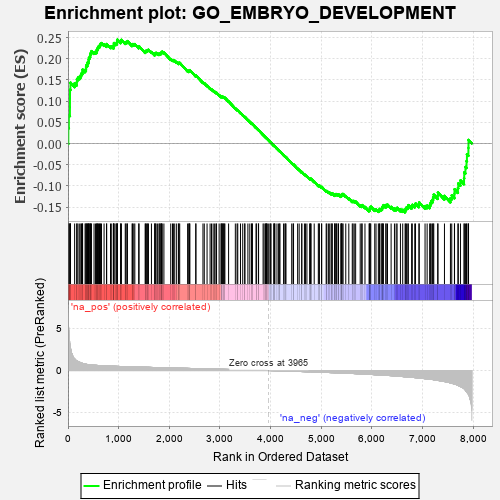
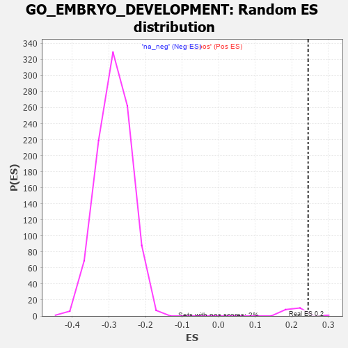

| | | Dataset | 7d |
| Phenotype | NoPhenotypeAvailable |
| Upregulated in class | na_pos |
| GeneSet | GO_EMBRYO_DEVELOPMENT |
| Enrichment Score (ES) | 0.24494591 |
| Normalized Enrichment Score (NES) | 1.1436238 |
| Nominal p-value | 0.05263158 |
| FDR q-value | 0.54509085 |
| FWER p-Value | 1.0 |
Table: GSEA Results Summary

Fig 1: Enrichment plot: GO_EMBRYO_DEVELOPMENT
Profile of the Running ES Score & Positions of GeneSet Members on the Rank Ordered List
| PROBE | GENE SYMBOL | GENE_TITLE | RANK IN GENE LIST | RANK METRIC SCORE | RUNNING ES | CORE ENRICHMENT | | 1 | ST14 | | | 7 | 5.713 | 0.0367 | Yes |
| 2 | HMX3 | | | 17 | 4.775 | 0.0670 | Yes |
| 3 | SP8 | | | 38 | 3.194 | 0.0854 | Yes |
| 4 | MEOX1 | | | 39 | 3.159 | 0.1062 | Yes |
| 5 | SIX2 | | | 40 | 3.152 | 0.1270 | Yes |
| 6 | TGFB3 | | | 49 | 2.654 | 0.1434 | Yes |
| 7 | SP3 | | | 131 | 1.391 | 0.1420 | Yes |
| 8 | SP9 | | | 173 | 1.143 | 0.1442 | Yes |
| 9 | FOXF1 | | | 176 | 1.136 | 0.1515 | Yes |
| 10 | WNT16 | | | 198 | 1.072 | 0.1558 | Yes |
| 11 | SMAD5 | | | 231 | 0.979 | 0.1581 | Yes |
| 12 | LBX1 | | | 254 | 0.929 | 0.1613 | Yes |
| 13 | TBX20 | | | 267 | 0.880 | 0.1656 | Yes |
| 14 | TEAD4 | | | 286 | 0.846 | 0.1688 | Yes |
| 15 | SHOX2 | | | 288 | 0.842 | 0.1742 | Yes |
| 16 | DLL1 | | | 337 | 0.760 | 0.1730 | Yes |
| 17 | TAPT1 | | | 354 | 0.743 | 0.1758 | Yes |
| 18 | ARNT | | | 357 | 0.741 | 0.1804 | Yes |
| 19 | HUS1 | | | 362 | 0.735 | 0.1848 | Yes |
| 20 | AXIN2 | | | 383 | 0.713 | 0.1869 | Yes |
| 21 | BAX | | | 387 | 0.711 | 0.1911 | Yes |
| 22 | NBN | | | 405 | 0.696 | 0.1935 | Yes |
| 23 | OCRL | | | 408 | 0.691 | 0.1978 | Yes |
| 24 | ALX4 | | | 413 | 0.686 | 0.2018 | Yes |
| 25 | CCNB2 | | | 429 | 0.672 | 0.2043 | Yes |
| 26 | RRN3 | | | 438 | 0.667 | 0.2076 | Yes |
| 27 | SUFU | | | 443 | 0.665 | 0.2115 | Yes |
| 28 | ERCC1 | | | 453 | 0.660 | 0.2147 | Yes |
| 29 | LEO1 | | | 463 | 0.655 | 0.2178 | Yes |
| 30 | CNOT2 | | | 514 | 0.625 | 0.2154 | Yes |
| 31 | SRF | | | 542 | 0.615 | 0.2160 | Yes |
| 32 | NLE1 | | | 565 | 0.609 | 0.2171 | Yes |
| 33 | HIRA | | | 568 | 0.608 | 0.2209 | Yes |
| 34 | CCNB1 | | | 581 | 0.601 | 0.2233 | Yes |
| 35 | ALX1 | | | 590 | 0.598 | 0.2262 | Yes |
| 36 | FBXW8 | | | 601 | 0.594 | 0.2288 | Yes |
| 37 | TAF8 | | | 622 | 0.587 | 0.2301 | Yes |
| 38 | GLMN | | | 632 | 0.583 | 0.2327 | Yes |
| 39 | SMG9 | | | 643 | 0.579 | 0.2352 | Yes |
| 40 | HES5 | | | 661 | 0.571 | 0.2368 | Yes |
| 41 | VASH1 | | | 712 | 0.556 | 0.2340 | Yes |
| 42 | ZIC3 | | | 760 | 0.542 | 0.2314 | Yes |
| 43 | UGDH | | | 764 | 0.540 | 0.2346 | Yes |
| 44 | TFEB | | | 839 | 0.522 | 0.2284 | Yes |
| 45 | ASF1B | | | 863 | 0.515 | 0.2288 | Yes |
| 46 | NSUN2 | | | 901 | 0.506 | 0.2273 | Yes |
| 47 | HCFC1 | | | 902 | 0.506 | 0.2307 | Yes |
| 48 | STOX1 | | | 905 | 0.506 | 0.2337 | Yes |
| 49 | WLS | | | 907 | 0.505 | 0.2369 | Yes |
| 50 | LRIG1 | | | 946 | 0.497 | 0.2353 | Yes |
| 51 | CTR9 | | | 964 | 0.492 | 0.2363 | Yes |
| 52 | ZPR1 | | | 967 | 0.491 | 0.2393 | Yes |
| 53 | DVL3 | | | 971 | 0.490 | 0.2421 | Yes |
| 54 | WDR48 | | | 975 | 0.489 | 0.2449 | Yes |
| 55 | AKT1 | | | 1040 | 0.476 | 0.2398 | No |
| 56 | YAP1 | | | 1041 | 0.475 | 0.2429 | No |
| 57 | MEF2C | | | 1054 | 0.473 | 0.2445 | No |
| 58 | KMT2A | | | 1130 | 0.458 | 0.2377 | No |
| 59 | EMX1 | | | 1143 | 0.455 | 0.2392 | No |
| 60 | GRSF1 | | | 1164 | 0.452 | 0.2396 | No |
| 61 | ERCC3 | | | 1173 | 0.451 | 0.2415 | No |
| 62 | CDC73 | | | 1265 | 0.436 | 0.2325 | No |
| 63 | CNOT3 | | | 1274 | 0.435 | 0.2344 | No |
| 64 | TEAD1 | | | 1298 | 0.428 | 0.2342 | No |
| 65 | UTP25 | | | 1319 | 0.425 | 0.2344 | No |
| 66 | SSBP3 | | | 1396 | 0.411 | 0.2272 | No |
| 67 | NOCT | | | 1402 | 0.409 | 0.2293 | No |
| 68 | LIAS | | | 1524 | 0.387 | 0.2161 | No |
| 69 | TDRD5 | | | 1528 | 0.387 | 0.2183 | No |
| 70 | SOS1 | | | 1547 | 0.384 | 0.2185 | No |
| 71 | DHX35 | | | 1563 | 0.381 | 0.2190 | No |
| 72 | FZD1 | | | 1574 | 0.379 | 0.2202 | No |
| 73 | PAF1 | | | 1588 | 0.376 | 0.2210 | No |
| 74 | RXRA | | | 1647 | 0.365 | 0.2159 | No |
| 75 | ERCC2 | | | 1712 | 0.354 | 0.2099 | No |
| 76 | PLOD3 | | | 1715 | 0.353 | 0.2120 | No |
| 77 | MEIS1 | | | 1723 | 0.351 | 0.2134 | No |
| 78 | RTCB | | | 1739 | 0.347 | 0.2137 | No |
| 79 | LRP5 | | | 1769 | 0.342 | 0.2122 | No |
| 80 | THOC2 | | | 1796 | 0.338 | 0.2111 | No |
| 81 | ABR | | | 1812 | 0.335 | 0.2113 | No |
| 82 | MSH2 | | | 1819 | 0.334 | 0.2127 | No |
| 83 | GATA4 | | | 1837 | 0.330 | 0.2127 | No |
| 84 | RTF1 | | | 1844 | 0.329 | 0.2141 | No |
| 85 | TCF7 | | | 1848 | 0.328 | 0.2159 | No |
| 86 | SMAD4 | | | 1860 | 0.326 | 0.2166 | No |
| 87 | CUL3 | | | 1893 | 0.321 | 0.2145 | No |
| 88 | NSRP1 | | | 2028 | 0.301 | 0.1991 | No |
| 89 | MEIS2 | | | 2063 | 0.296 | 0.1967 | No |
| 90 | LRRC7 | | | 2080 | 0.294 | 0.1965 | No |
| 91 | BMP7 | | | 2107 | 0.290 | 0.1950 | No |
| 92 | ATOH8 | | | 2145 | 0.285 | 0.1921 | No |
| 93 | UBE2A | | | 2183 | 0.278 | 0.1891 | No |
| 94 | MEIS3 | | | 2188 | 0.278 | 0.1905 | No |
| 95 | HM13 | | | 2205 | 0.276 | 0.1902 | No |
| 96 | SIN3A | | | 2361 | 0.251 | 0.1717 | No |
| 97 | PELO | | | 2386 | 0.247 | 0.1702 | No |
| 98 | HIPK2 | | | 2389 | 0.247 | 0.1716 | No |
| 99 | RBM19 | | | 2396 | 0.246 | 0.1724 | No |
| 100 | PBX4 | | | 2406 | 0.245 | 0.1729 | No |
| 101 | SALL4 | | | 2523 | 0.223 | 0.1593 | No |
| 102 | MBD3 | | | 2524 | 0.223 | 0.1608 | No |
| 103 | ARID2 | | | 2664 | 0.204 | 0.1441 | No |
| 104 | KDM6A | | | 2690 | 0.200 | 0.1421 | No |
| 105 | TPRA1 | | | 2745 | 0.192 | 0.1364 | No |
| 106 | BRK1 | | | 2805 | 0.183 | 0.1299 | No |
| 107 | RIC8A | | | 2833 | 0.179 | 0.1276 | No |
| 108 | WDTC1 | | | 2865 | 0.172 | 0.1247 | No |
| 109 | FGFR2 | | | 2895 | 0.167 | 0.1220 | No |
| 110 | ELL | | | 2921 | 0.163 | 0.1199 | No |
| 111 | ACVR1 | | | 2932 | 0.161 | 0.1196 | No |
| 112 | PCSK5 | | | 2983 | 0.152 | 0.1141 | No |
| 113 | WNT4 | | | 3023 | 0.146 | 0.1100 | No |
| 114 | BRCA2 | | | 3024 | 0.146 | 0.1110 | No |
| 115 | LEF1 | | | 3037 | 0.144 | 0.1104 | No |
| 116 | BIRC6 | | | 3047 | 0.143 | 0.1102 | No |
| 117 | KEAP1 | | | 3063 | 0.141 | 0.1091 | No |
| 118 | RBBP6 | | | 3066 | 0.141 | 0.1098 | No |
| 119 | HDAC1 | | | 3086 | 0.138 | 0.1083 | No |
| 120 | CUL4A | | | 3097 | 0.137 | 0.1079 | No |
| 121 | PAX6 | | | 3170 | 0.127 | 0.0993 | No |
| 122 | SMAD3 | | | 3303 | 0.105 | 0.0829 | No |
| 123 | SMAD1 | | | 3337 | 0.099 | 0.0793 | No |
| 124 | TAB1 | | | 3351 | 0.097 | 0.0782 | No |
| 125 | MED1 | | | 3405 | 0.089 | 0.0719 | No |
| 126 | TOP1 | | | 3449 | 0.084 | 0.0669 | No |
| 127 | GLI1 | | | 3489 | 0.079 | 0.0623 | No |
| 128 | UNK | | | 3491 | 0.079 | 0.0627 | No |
| 129 | FUT8 | | | 3551 | 0.067 | 0.0555 | No |
| 130 | MAPK3 | | | 3589 | 0.062 | 0.0511 | No |
| 131 | NOLC1 | | | 3623 | 0.056 | 0.0472 | No |
| 132 | ACSL4 | | | 3632 | 0.055 | 0.0465 | No |
| 133 | SBDS | | | 3640 | 0.053 | 0.0460 | No |
| 134 | NF1 | | | 3713 | 0.040 | 0.0369 | No |
| 135 | HSF1 | | | 3718 | 0.039 | 0.0366 | No |
| 136 | VPS52 | | | 3758 | 0.033 | 0.0318 | No |
| 137 | SKI | | | 3762 | 0.032 | 0.0316 | No |
| 138 | ITPK1 | | | 3851 | 0.020 | 0.0203 | No |
| 139 | NEK2 | | | 3871 | 0.016 | 0.0179 | No |
| 140 | NIPBL | | | 3900 | 0.010 | 0.0144 | No |
| 141 | JAG2 | | | 3903 | 0.010 | 0.0142 | No |
| 142 | MED21 | | | 3917 | 0.007 | 0.0125 | No |
| 143 | HINFP | | | 3920 | 0.006 | 0.0123 | No |
| 144 | CCM2 | | | 3933 | 0.005 | 0.0108 | No |
| 145 | EXT1 | | | 3954 | 0.001 | 0.0082 | No |
| 146 | EYA1 | | | 3987 | -0.006 | 0.0041 | No |
| 147 | BTF3 | | | 3994 | -0.007 | 0.0033 | No |
| 148 | SYF2 | | | 4008 | -0.009 | 0.0017 | No |
| 149 | TAL1 | | | 4064 | -0.018 | -0.0053 | No |
| 150 | SFRP2 | | | 4065 | -0.018 | -0.0052 | No |
| 151 | TCF15 | | | 4077 | -0.020 | -0.0065 | No |
| 152 | WNT2 | | | 4084 | -0.021 | -0.0071 | No |
| 153 | ABL1 | | | 4125 | -0.027 | -0.0121 | No |
| 154 | HNF4A | | | 4157 | -0.034 | -0.0159 | No |
| 155 | PDX1 | | | 4179 | -0.038 | -0.0184 | No |
| 156 | EXOC4 | | | 4182 | -0.039 | -0.0184 | No |
| 157 | PAX5 | | | 4255 | -0.051 | -0.0274 | No |
| 158 | WNT11 | | | 4282 | -0.056 | -0.0304 | No |
| 159 | TDG | | | 4290 | -0.058 | -0.0310 | No |
| 160 | TBX2 | | | 4303 | -0.060 | -0.0321 | No |
| 161 | RALA | | | 4416 | -0.079 | -0.0461 | No |
| 162 | SETD2 | | | 4443 | -0.084 | -0.0490 | No |
| 163 | KCNQ4 | | | 4452 | -0.085 | -0.0495 | No |
| 164 | PLPP4 | | | 4533 | -0.101 | -0.0592 | No |
| 165 | BAG6 | | | 4563 | -0.108 | -0.0622 | No |
| 166 | GATA3 | | | 4614 | -0.120 | -0.0679 | No |
| 167 | ATOH1 | | | 4615 | -0.121 | -0.0671 | No |
| 168 | FOXD3 | | | 4667 | -0.132 | -0.0729 | No |
| 169 | PTK7 | | | 4687 | -0.136 | -0.0745 | No |
| 170 | LHX2 | | | 4716 | -0.143 | -0.0771 | No |
| 171 | PLCG1 | | | 4770 | -0.151 | -0.0830 | No |
| 172 | RTN4 | | | 4783 | -0.154 | -0.0836 | No |
| 173 | RAB14 | | | 4784 | -0.155 | -0.0826 | No |
| 174 | PLD6 | | | 4799 | -0.157 | -0.0833 | No |
| 175 | DLG1 | | | 4860 | -0.169 | -0.0900 | No |
| 176 | EP300 | | | 4941 | -0.186 | -0.0992 | No |
| 177 | PRKDC | | | 4955 | -0.189 | -0.0996 | No |
| 178 | TRA2B | | | 4962 | -0.191 | -0.0991 | No |
| 179 | KLF4 | | | 5005 | -0.198 | -0.1033 | No |
| 180 | DAD1 | | | 5008 | -0.199 | -0.1022 | No |
| 181 | ETS2 | | | 5096 | -0.223 | -0.1121 | No |
| 182 | MMP9 | | | 5108 | -0.227 | -0.1120 | No |
| 183 | FLCN | | | 5140 | -0.235 | -0.1145 | No |
| 184 | TBX1 | | | 5166 | -0.241 | -0.1161 | No |
| 185 | SMO | | | 5195 | -0.247 | -0.1181 | No |
| 186 | ATM | | | 5210 | -0.249 | -0.1183 | No |
| 187 | TOP2A | | | 5216 | -0.250 | -0.1173 | No |
| 188 | CDK1 | | | 5264 | -0.262 | -0.1217 | No |
| 189 | PICK1 | | | 5265 | -0.263 | -0.1200 | No |
| 190 | CELF4 | | | 5275 | -0.266 | -0.1194 | No |
| 191 | FKBP8 | | | 5296 | -0.270 | -0.1202 | No |
| 192 | EPN1 | | | 5304 | -0.272 | -0.1193 | No |
| 193 | UBR3 | | | 5332 | -0.281 | -0.1210 | No |
| 194 | TCF21 | | | 5340 | -0.283 | -0.1200 | No |
| 195 | FZD5 | | | 5386 | -0.292 | -0.1240 | No |
| 196 | MGAT1 | | | 5395 | -0.294 | -0.1231 | No |
| 197 | PLK4 | | | 5397 | -0.295 | -0.1212 | No |
| 198 | SOX8 | | | 5404 | -0.296 | -0.1201 | No |
| 199 | LATS1 | | | 5412 | -0.298 | -0.1190 | No |
| 200 | CIR1 | | | 5430 | -0.302 | -0.1192 | No |
| 201 | STIL | | | 5483 | -0.314 | -0.1239 | No |
| 202 | FGFR1 | | | 5543 | -0.332 | -0.1294 | No |
| 203 | CPT2 | | | 5611 | -0.348 | -0.1358 | No |
| 204 | ROR2 | | | 5626 | -0.353 | -0.1353 | No |
| 205 | WNK1 | | | 5650 | -0.362 | -0.1359 | No |
| 206 | CASP8 | | | 5678 | -0.369 | -0.1370 | No |
| 207 | ELF3 | | | 5768 | -0.396 | -0.1459 | No |
| 208 | ADA | | | 5798 | -0.405 | -0.1470 | No |
| 209 | BBS4 | | | 5806 | -0.407 | -0.1452 | No |
| 210 | BBS5 | | | 5862 | -0.421 | -0.1496 | No |
| 211 | PCGF2 | | | 5943 | -0.451 | -0.1570 | No |
| 212 | PRDM1 | | | 5956 | -0.457 | -0.1556 | No |
| 213 | PGAP1 | | | 5958 | -0.457 | -0.1527 | No |
| 214 | B9D1 | | | 5962 | -0.459 | -0.1501 | No |
| 215 | GABPA | | | 5977 | -0.464 | -0.1488 | No |
| 216 | LRIG3 | | | 6055 | -0.492 | -0.1556 | No |
| 217 | FBN1 | | | 6080 | -0.499 | -0.1554 | No |
| 218 | DLG2 | | | 6126 | -0.513 | -0.1579 | No |
| 219 | STK4 | | | 6145 | -0.518 | -0.1568 | No |
| 220 | ROCK1 | | | 6152 | -0.520 | -0.1542 | No |
| 221 | KLF2 | | | 6182 | -0.532 | -0.1544 | No |
| 222 | MYO1E | | | 6200 | -0.537 | -0.1531 | No |
| 223 | INSR | | | 6204 | -0.538 | -0.1500 | No |
| 224 | SMAD2 | | | 6216 | -0.541 | -0.1478 | No |
| 225 | TPM1 | | | 6226 | -0.545 | -0.1454 | No |
| 226 | HSBP1 | | | 6273 | -0.562 | -0.1477 | No |
| 227 | IFT52 | | | 6280 | -0.566 | -0.1447 | No |
| 228 | IFT57 | | | 6307 | -0.579 | -0.1443 | No |
| 229 | CDON | | | 6378 | -0.607 | -0.1494 | No |
| 230 | SF3B6 | | | 6444 | -0.637 | -0.1536 | No |
| 231 | SOX2 | | | 6477 | -0.652 | -0.1535 | No |
| 232 | LAMA1 | | | 6496 | -0.659 | -0.1515 | No |
| 233 | OTOP1 | | | 6562 | -0.690 | -0.1554 | No |
| 234 | MKS1 | | | 6607 | -0.715 | -0.1564 | No |
| 235 | USH1G | | | 6654 | -0.740 | -0.1575 | No |
| 236 | TMED2 | | | 6665 | -0.746 | -0.1539 | No |
| 237 | VASH2 | | | 6680 | -0.752 | -0.1507 | No |
| 238 | EGFR | | | 6708 | -0.765 | -0.1492 | No |
| 239 | DMRT2 | | | 6718 | -0.768 | -0.1453 | No |
| 240 | C2CD3 | | | 6783 | -0.802 | -0.1484 | No |
| 241 | WDR19 | | | 6796 | -0.812 | -0.1446 | No |
| 242 | PTH1R | | | 6845 | -0.839 | -0.1453 | No |
| 243 | AHI1 | | | 6860 | -0.848 | -0.1415 | No |
| 244 | DISP1 | | | 6928 | -0.887 | -0.1444 | No |
| 245 | MIB1 | | | 6932 | -0.890 | -0.1389 | No |
| 246 | MYH10 | | | 7048 | -0.966 | -0.1475 | No |
| 247 | BBS7 | | | 7089 | -0.988 | -0.1462 | No |
| 248 | WHRN | | | 7139 | -1.025 | -0.1458 | No |
| 249 | WDR60 | | | 7153 | -1.038 | -0.1406 | No |
| 250 | AR | | | 7169 | -1.046 | -0.1357 | No |
| 251 | OVOL2 | | | 7197 | -1.068 | -0.1322 | No |
| 252 | MFN2 | | | 7208 | -1.081 | -0.1263 | No |
| 253 | LAMB1 | | | 7220 | -1.094 | -0.1206 | No |
| 254 | MSX2 | | | 7299 | -1.171 | -0.1230 | No |
| 255 | MYO7A | | | 7302 | -1.175 | -0.1155 | No |
| 256 | LHX1 | | | 7431 | -1.305 | -0.1235 | No |
| 257 | LAMA2 | | | 7549 | -1.468 | -0.1291 | No |
| 258 | TTPA | | | 7575 | -1.516 | -0.1223 | No |
| 259 | PKD1 | | | 7628 | -1.611 | -0.1185 | No |
| 260 | PDCD6 | | | 7630 | -1.615 | -0.1080 | No |
| 261 | MYO6 | | | 7697 | -1.753 | -0.1050 | No |
| 262 | ADCY9 | | | 7704 | -1.783 | -0.0940 | No |
| 263 | CASP3 | | | 7747 | -1.902 | -0.0870 | No |
| 264 | TRAF6 | | | 7818 | -2.157 | -0.0819 | No |
| 265 | PKD2 | | | 7822 | -2.167 | -0.0680 | No |
| 266 | DLX5 | | | 7845 | -2.378 | -0.0552 | No |
| 267 | ECE1 | | | 7867 | -2.498 | -0.0415 | No |
| 268 | MMP2 | | | 7875 | -2.574 | -0.0254 | No |
| 269 | PLCB1 | | | 7904 | -2.841 | -0.0103 | No |
| 270 | FBN2 | | | 7906 | -2.873 | 0.0084 | No |
Table: GSEA details [plain text format]

Fig 2: GO_EMBRYO_DEVELOPMENT: Random ES distribution
Gene set null distribution of ES for GO_EMBRYO_DEVELOPMENT